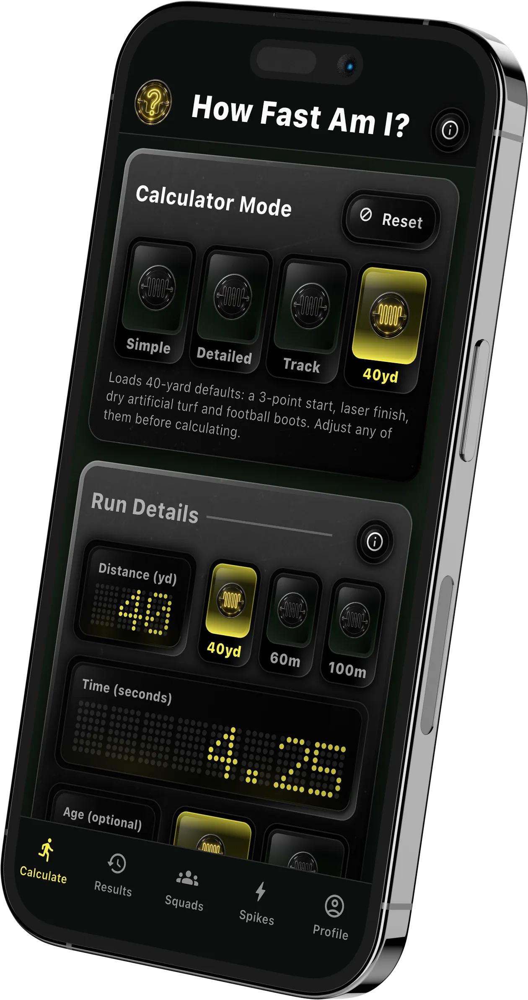
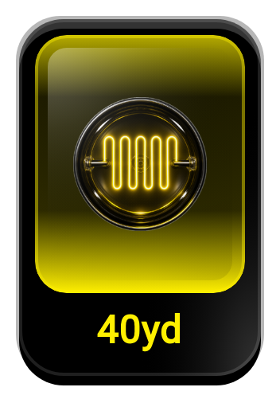

সময় ব্যবহার করে একটি স্প্রিংট পরিবর্তন করুন
অবস্থা এবং সময় থেকে শুরু করুন। আরও বিস্তারিত তথ্য প্রয়োজন হলে, শুরু ধরার ধরন, সময় নির্ধারণ পদ্ধতি, পৃষ্ঠ, ফুটেজ, বাতাস, বা উচ্চতা যোগ করুন।
স্পর্ট সময় পরিবর্তনকারী
30 মিটার, 60 মিটার বা অন্য কোনো দূরত্বে স্প্রিন্টের সময় রেকর্ড করেছেন? 100 মিটারে সম্ভাব্য সময় জানতে দূরত্ব ও সময় লিখুন। শুরুর ধরন, সময় মাপার পদ্ধতি ও দৌড়ের পৃষ্ঠের তথ্য যোগ করলে অনুমানে আপনার পরিস্থিতি বিবেচনা করা হবে।
বাইরের বস্তু প্রয়োজন নেই। একটি দূরত্ব এবং একটি সময় থেকে শুরু করুন।

একটি 100 মিটার অনুমান ব্যবহার করে কম দূরত্বের স্প্রিংটগুলি একটি সাধারণ স্কেলে রাখুন এবং সময়ের সাথে আপনার প্রদর্শনগুলি কীভাবে পরিবর্তিত হবে তা অনুভব করুন।
অবস্থা এবং সময় থেকে শুরু করুন। আরও বিস্তারিত তথ্য প্রয়োজন হলে, শুরু ধরার ধরন, সময় নির্ধারণ পদ্ধতি, পৃষ্ঠ, ফুটেজ, বাতাস, বা উচ্চতা যোগ করুন।
আপনার সাধারণ বেগ মাপা হবে mph বা km/h এর মাধ্যমে, তারপর এটি একটি বেগ স্কোর, বয়স প্রতিশ্রুত তুলনা এবং শেয়ার করা ফলাফল দ্বারা পরিবেষ্টন করুন।
অ্যাথলেট আক্রমণ করুন, আপনার রিলে স্কয়ার রূপ করুন, বৈশিষ্ট্য বিকাশ করুন, ব্যক্তিগত সর্বোচ্চ পৌঁছানো, প্রতিযোগিতা স্থানাভিসার তুলনা করুন, এবং প্রতিযোগিতা সম্পন্ন করুন।
আপনার রান দূরত্ব এবং সময় যোগ করুন। সুপারিস মোড ব্যবহার করে একটি তাড়াতাড়ি অনুমান প্রদান করুন।
বিস্তারিত মোডে, অ্যাপের কিভাবে শুরু হয়েছিল এবং ক্লাক কী বাজানো হয়েছিল তা বলুন। বিমান শুরু আপনাকে একটি চলন্ত দেয়, যেখানে স্থির শুরু শুরু থেকে ত্বরণ বর্ণনা করে।
অনুমানটি বিভিন্ন দূরত্বের স্পর্টগুলির মধ্যে তুলনা করার জন্য ব্যবহার করুন এবং আপনার প্রগতি অনুসন্ধান করুন।

উদাহরণ: 60 মিটার 7.50 সেকেন্ডে দৌড়ালে 100 মিটারের আনুমানিক সময় 11.64 সেকেন্ড।
অ্যাপে «Track Meet» মোড খুলে «Male» বেছে নিন এবং 60 মিটার ও 7.50 সেকেন্ড লিখুন। স্টার্টিং ব্লক, ইলেকট্রনিক টাইমিং, স্পাইক লাগানো জুতা, শুকনো রাবারের ট্র্যাক ও বাতাস নেই এমন পরিস্থিতি বেছে নিন। বয়স ও সমুদ্রপৃষ্ঠ থেকে উচ্চতার ঘর খালি রাখুন।
11.64 সেকেন্ড একটি অনুমান। 100 মিটারের আনুষ্ঠানিক সময় পেতে 100 মিটার দৌড়ের সময় মাপতে হবে।


এটি ব্যবহার করার একটি উপায়
4.50 সেকেন্ডে 40 গজ দৌড়ালে পুরো দূরত্বে গড় গতি 18.2 মাইল/ঘণ্টা (29.3 কিমি/ঘণ্টা)। অ্যাপের 40 গজ মোডে সময় মাপার পদ্ধতি ও দৌড়ের পরিস্থিতি অনুযায়ী 100 মিটারের সময় অনুমান করুন।


আপনার স্পর্তিতে ভাগ করুন
আপনার স্প্রিন্টের ফল স্বচ্ছ স্টিকার হিসেবে সেভ করে নিজের ছবি বা ভিডিওতে বসান। তারপর Instagram Story-তে শেয়ার করুন বা TikTok-এ পোস্ট করুন। চাইলে ফল আলাদা ভিডিও হিসেবেও সেভ করতে পারেন।

টিম রাস্তা চলন
সম্পূর্ণ রেলি টিম তৈরি করুন যারা পরিবর্তনশীল ক্ষমতা সম্পর্কে পরিচিত। ফর্ম বা পরিচালনা, রাস্তা শর্ত, এবং যখন তা প্রয়োজন হয় তখন তাদের ক্ষমতা পরিবর্তন করা সম্পর্কে জানুন।
আপনার সময় সেট হওয়া যাবে
আপনার পরবর্তী স্প্রিংটের দূরত্ব এবং সময় নিয়ে আসুন।